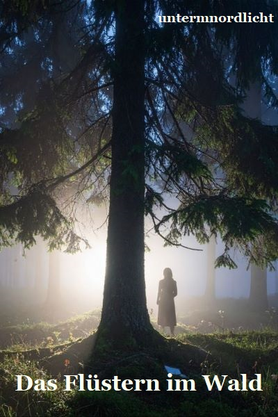

Das Flüstern im Wald
Kostenlose Kurzgeschichte (PDF)
Entstanden aus drei einfachen Wörtern – Wald, Licht, Junge
Inspiriert von der Musik von The Rasmus – von dieser stillen Melancholie zwischen Dunkelheit und Hoffnung, wenn beides gleichzeitig wahr sein darf. Vielleicht ist der Wald gar kein Ort, sondern ein Gefühl. Ein leises Flüstern, das sagt: Du bist da.
Downloads bisher: 0